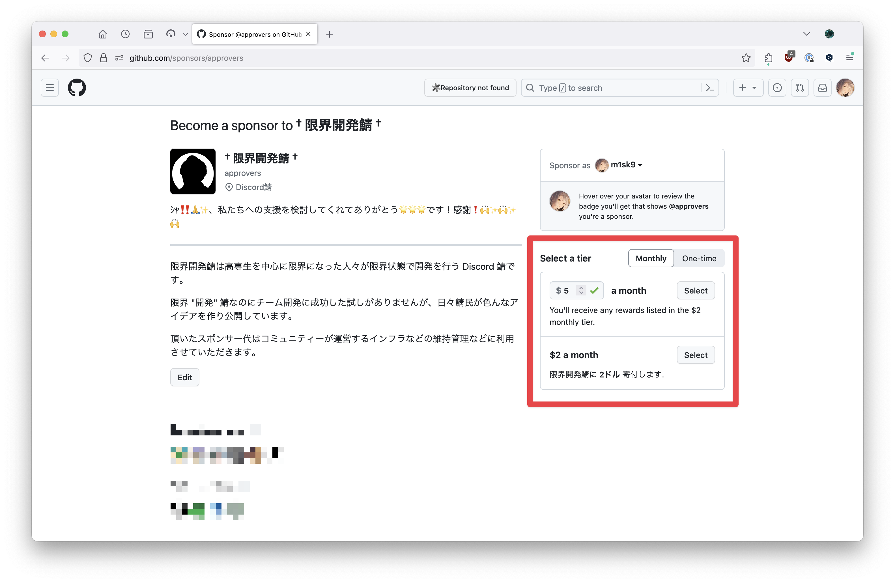

注意: このドキュメントサイトは ichiyoAI v2.0.0 以降のバージョンに対応しています. v1.19.0 以前のバージョンに関する情報は提供されていません.
はじめに
Welcome to ichiyoAI documentation!
ここは ichiyoAI の使い方などをまとめたドキュメントサイトです.
- ichiyoAI / ichiyoAI:lib は限界開発鯖向けに開発された Discord Bot です. アクセス権限は限界開発鯖メンバーに限定されています.
- 公開された Docker Image を使うことで, 誰でも導入することはできますがサポートすることはできません.
- ここでは ChatGPT, DALL-E, Gemini の技術的な話題にも触れていますが, 最新情報は各AIの公式サイト・公式ドキュメントを参照してください.
関連情報
Text Generation
ichiyoAI は ChatGPT, Gemini を利用したテキスト生成に対応しています.
使用方法
Message Command
ichiyoAI に送信するプロンプトメッセージに対して Message Command を送信することで, テキスト生成を行うことができます.
Message Command は以下のように構成されています. 使用するモデルに合わせてコマンドを選んでください.
| モデル | コマンド |
|---|---|
| GPT-4 Turbo | Text (GPT-4 Turbo) |
| GPT-3.5 Turbo | Text (GPT-3.5 Turbo) |
| Gemini | Text (Gemini) |
メンション (Legacy)
v1.19.0 以前の方法です. この方法は今後削除される可能性があります.
ichiyoAI にメンションを送信することで, テキスト生成を行うことができます. ただしこの方法は GPT-4 Turbo, GPT-3.5 Turbo のみ対応しています. Gemini は対応していません.
返信モード
ichiyoAI のメッセージに対してメンション付きで返信すると, 返信元のリプライまで ChatGPT, Gemini が理解した上で応答します.
注意事項
- OpenAI API 側からのレスポンスの文字数が 2000 文字を超えた場合, Discord API の仕様上 ichiyoAI は返信せずに終了します.
- OpenAI API へリクエストを送ってから3分以上かかった場合は tokio により自動的にタイムアウトになります。もう一度送るか、内容を見直してみてください。
Image Generation
ichiyoAI は DALL-E を利用した画像生成に対応しています.
使用方法
/image コマンドを使用して画像生成を行うことができます.
/image <size> <count> <model> [prompt]
size: 生成する画像のサイズを指定します.count: 生成する画像の枚数を指定します.model: 生成に使用するモデルを指定します.dalle-2またはdalle-3を指定できます.prompt: 生成する画像のテキストを指定します.
注意事項
- DALL-E の倫理コードに引っかかるような不適切なプロンプトは実行できません.
- 画像は右クリックメニューから 画像を保存する ( Save Image ) を選ぶか, 生成結果 をクリックしてアクセス出来るサイトからダウンロードしてください.
- 時間が経過した画像については Cache が消失してダウンロードできない場合があります.
モデル
ichiyoAI は現在 ChatGPT, Gemini, DALL-E に対応しています.
LLM (大規模言語モデル)
大規模言語モデルは、信憑性、理解度、範囲の全てにおいて限界があり、人間の監視が必要です。 — マイケル・オズボーン、オックスフォード大学機械学習教授 2023年1月25日
LLMとは、人工ニューラルネットワークを使って文章やソースコードを生成する生成的モデル.
多数のパラメータ (数千万〜) を持つ人工ニュートラルネットワークを訓練することで, 人間のような文章を生成することができます.
ChatGPT
OpenAI が開発するチャットボット (非対話型人工知能.)
GPT-4
GPT-3.5 を改良し, 自然言語やコードを理解・生成できる言語モデル. GPT-3.5 の 完全上位互換 .
アクセスには限界税への納税が必要です.
| モデル名 | ichiyoAI の対応バージョン | Context Window | トレーニングデータ | Input | Output |
|---|---|---|---|---|---|
| gpt-4-1106-preview | v1.16.0 〜 | 128,000 Token | Apr 2023 | $0.01 / 1k | $0.03 / 1k |
| gpt-4-vision-preview | 未対応(*) | 128,000 Token | Apr 2023 | $0.01 / 1k | $0.03 / 1k |
| gpt-4 (Current: gpt-4-0613) | v1.5.0 〜 v1.15.4 | 8.192 Token | Sep 2021 | $0.03 / 1k | $0.06 / 1k |
| gpt-4-32k | 未対応(*) | 32,768 Token | Sep 2021 | $0.03 / 1k | $0.06 / 1k |
*: 対応予定なしのモデルです.
GPT-3.5
GPT-3 を改良し, 自然言語やコードを理解・生成できる言語モデル.
| モデル名 | ichiyoAI の対応バージョン | Context Window | トレーニングデータ | Input | Output |
|---|---|---|---|---|---|
| gpt-3.5-turbo-1106 | v1.16.0 〜 | 16,385 Token | Sep 2021 | $0.0010 / 1k | $0.0020 / 1k |
| gpt-3.5-turbo (Current: gpt-3.5-turbo-0613) | 〜 v1.15.4 | 4,096 Token | Sep 2021 | $0.0015 / 1k | $0.002 / 1k |
Gemini
Google が2014年に買収したイギリスにある Alphabet の人工知能子会社 DeepMind Technologies が開発したマルチモーダル大規模言語モデル.
LaMDA, PaLM2 の後継として供し, Gemini Ultra, Gemini Pro, Gemini Nano からなり, GPT-4 のライバルとして位置づけられている.
- Gemini Ultra は GPT-4, Gemini Pro は GPT-3.5 がライバルとしてそれぞれ位置づけられています.
| モデル名 | ichiyoAI の対応バージョン | Input | Output | Price |
|---|---|---|---|---|
| Gemini Pro | v2.0.0 〜 | Text | Text | Free |
| Gemini Pro Vision | 未対応(*) | Text and Image | Text | Free |
- Gemini Ultra, Gemini Nano は Preview access 状態のため, ichiyoAI は未対応です.
- 利用できるようになり次第対応予定です.
- PaLM や Embedding, Retrieval への対応は予定されていません.
*: 対応予定なしのモデルです.
深層学習モデル
ディープラーニング（英: deep learning）または深層学習（しんそうがくしゅう）とは、対象の全体像から細部までの各々の粒度の概念を階層構造として関連させて学習する手法のことである
DALL-E
OpenAI が開発する画像生成モデル.
prompts と呼ばれる自然言語の記述からデジタル画像を生成することができます.
DALL-E 3 のアクセスには限界税への納税が必要です.
| モデル名 | ichiyoAI の対応バージョン | Price (1024×1024) |
|---|---|---|
| dall-e-3 | v1.17.0 〜 | $0.040 / image |
| dall-e-2 | v1.17.0 〜 | $0.020 / image |
パフォーマンス比較
以下の Performance benchmarks は Google AI for Developers から引用しています.
Gemini Ultra vs. GPT-4 (V)
| 能力 | ベンチマーク | Gemini Ultra | GPT-4 (V) |
|---|---|---|---|
| 全般 | MMLU 57科目 (STEM, 人文科学など) の代表質問 | 90.0 % | 86.4 % |
| 推論 | Big-Bench Hard 多段階の推論を必要とする難易度の高い多様なタスク | 83.6 % | 83.1 % |
| 推論 | DROP 読解力 | 82.4 | 80.9 |
| 推論 | HellaSwag 日常業務における常識的な推論 | 87.8 % | 95.3 % |
| 数学 | GSM8K 基本的な算数 (小学生の算数問題) | 94.4 % | 92.0 % |
| 数学 | MATH 難易度の高い数学問題 (代数, 幾何, 微積分) | 53.2 % | 52.9 % |
| コード | HumanEval Python コードの生成 | 74.4 % | 67.0 % |
| コード | Natural2Code Python コードの生成. HumanEval のような新しいデータセット. | 74.9 % | 73.9 % |
Gemini Pro vs. GPT-3.5
| 能力 | ベンチマーク | Gemini Ultra | GPT-4 (V) |
|---|---|---|---|
| 全般 | MMLU 57科目 (STEM, 人文科学など) の代表質問 | 79.1 % | 70.0 % |
| 推論 | Big-Bench Hard 多段階の推論を必要とする難易度の高い多様なタスク | 75.0 % | 66.6 % |
| 推論 | DROP 読解力 | 74.1 | 64.1 |
| 推論 | HellaSwag 日常業務における常識的な推論 | 84.7 % | 85.5 % |
| 数学 | GSM8K 基本的な算数 (小学生の算数問題) | 86.5 % | 57.1 % |
| 数学 | MATH 難易度の高い数学問題 (代数, 幾何, 微積分) | 32.6 % | 34.1 % |
| コード | HumanEval Python コードの生成 | 67.7 % | 48.1 % |
| コード | Natural2Code Python コードの生成. HumanEval のような新しいデータセット. | 69.6 % | 62.3 % |
プレミアムアクセス
ichiyoAI が使用するモデルは, すべて API を利用しています. それらのモデルは無料で利用しているわけではなく限界開発鯖の GitHub Sponsors 限界税 からお金を出して契約しています.
ichiyoAI では一部のモデルにおいて 限界税 を納税したユーザーのみがアクセスできる プレミアムアクセス を提供しています.
注意: 限界税を納税しなくても ichiyoAI の全機能 (GPT-3.5, Gemini, DALL-E 2) は利用できます.
利用できるモデル一覧
- GPT-4
- DALL-E 3
- Gemini Ultra
モデルの比較
モデル を参照してください.
納税方法
納税の方法は大きく分けて2つあります.
- GitHub Sponsors から納税する
- 限界開発鯖 Discord にサーバーブーストする
本来限界税は 1 のみが正式な方法ですが, ichiyoAI は 2 の方法にも対応しています. Containers2 を利用するには 1 での納税が必須です.
GitHub Sponsors から納税する
- 限界開発鯖 の GitHub Sponsors ページ にアクセスします.

Monthly(毎月) またはOne-time(一度きり) を選択し, $2 以上の金額を入力します.

Selectをクリックし, 画面の指示に従います.- 限界開発鯖 Discord を開き,
Linked Role(連携ロール) をクリックし, Sponsor App と Discord アカウントを連携する. - 自分のロールに
Sponsorが追加されていることを確認します. 追加されているのを確認したら@m1sk9(める) にメンションして納税者ロールをもらってください.
限界開発鯖 Discord にサーバーブーストする
Discord におけるサーバーブーストの方法は こちら から確認できます.